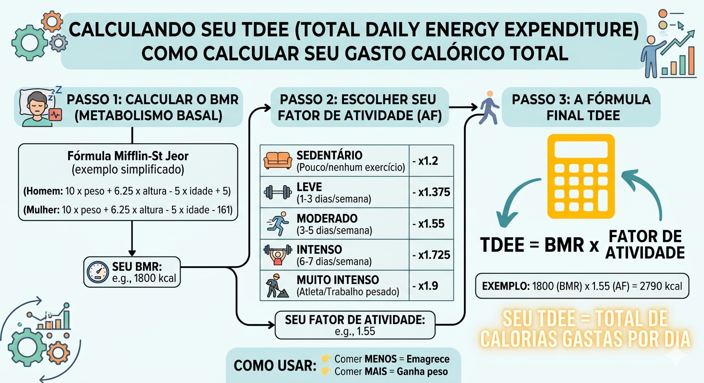

Como calcular seu TDEE (Guia Completo)
Se você já se perguntou por que algumas pessoas comem muito e não engordam, ou por que você estagnou na perda de peso, a resposta está no TDEE (Total Daily Energy Expenditure). Entender esse conceito é o primeiro passo para transformar seu físico com previsibilidade e estratégia.
O que compõe o seu gasto calórico total?
O TDEE não é apenas o que você queima na academia. Ele é a soma de quatro fatores:
- BMR: Energia para manter o corpo vivo.
- TEF: Energia para digerir alimentos.
- EAT: Exercícios físicos.
- NEAT: Movimento do dia a dia.
Entendendo na prática
Imagine duas pessoas com o mesmo peso:
- Uma trabalha sentado o dia todo → baixo NEAT
- Outra anda muito e se movimenta → alto NEAT
Mesmo com o mesmo treino, elas terão TDEE diferente. 👉 Isso explica por que dietas "iguais" dão resultados diferentes.
Passo a passo do cálculo
1. Calcular o BMR
A fórmula mais usada hoje é a Mifflin-St Jeor, considerada mais precisa que versões antigas.
2. Aplicar fator de atividade
| Nível | Descrição | Multiplicador |
|---|---|---|
| Sedentário | Pouco movimento | x1.2 |
| Leve | Treino leve | x1.375 |
| Moderado | Treino regular | x1.55 |
| Intenso | Treino pesado diário | x1.725 |

Exemplo visual de como o nível de atividade impacta o TDEE.
Quer evitar erro?
Calcular automaticamenteExemplo real (simplificado)
Homem, 80kg, moderadamente ativo
- BMR ≈ 1800 kcal
- TDEE = 1800 × 1.55
- TDEE ≈ 2790 kcal
Como usar isso a seu favor
Cutting (emagrecer)
Reduza de 300 a 500 kcal do TDEE.
Bulking (ganhar massa)
Adicione de 200 a 400 kcal.
Erros comuns
- Superestimar nível de atividade
- Não ajustar calorias com o tempo
- Ignorar proteína
- Desistir antes de 2 semanas
Dicas finais
- Recalcule a cada 3–5kg
- Use média semanal de peso
- Se nada mudar → ajuste 100 kcal
Resultado vem de consistência + ajuste fino. O TDEE é só o começo.
Próximos passos
Agora que você sabe seu gasto calórico, avance para: